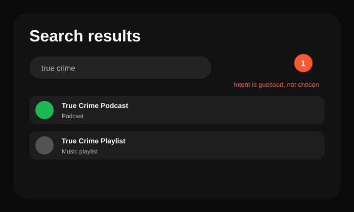
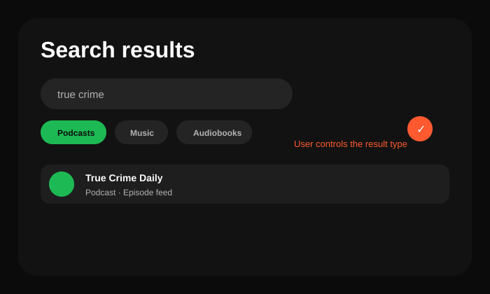

Secondary Exercise
Spotify Redesign
A product teardown exercise focused on search intent and discovery friction. This supports the portfolio, but the BRQ project is the main proof point.

Before: search blends result types too quickly.

After: content-type filters let users control intent.